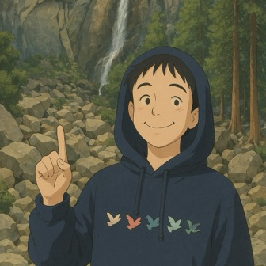

Charles (Tzu-Wei) Lee李梓維
Ph.D. Candidate, Biomedical Engineering
Vanderbilt University · advised by Prof. John Gore
Vanderbilt University Institute of Imaging Science (VUIIS)
Neuroimaging & MRI Physics · Multimodal ML · LLM Agents & Inference Systems · Dynamical Systems
About
Hello! I'm Charles (Tzu-Wei, 李梓維), a Ph.D. candidate in Biomedical Engineering at Vanderbilt University. I bring 8+ years in biotechnology and neuroscience and 7+ years of machine learning research.
My path runs from MR physics — pulse sequence programming and image reconstruction at 3T, 7T, and 15.2T — to biophysical modeling of the neural and vascular signals behind fMRI, and on to multimodal ML and foundation models for large-scale neuroimaging and genomics data, plus LLM agents for clinical decision support. On the side, I dig into efficient LLM inference (vLLM, SGLang, Triton).
Research Interests
- MRI Physics & Image Reconstruction
- fMRI & BOLD Biophysics
- Dynamical Systems Modeling
- Multimodal Representation Learning
- Clinical AI Agents
- LLM Inference Systems
Education
- Ph.D., Bioengineering & Biomedical Engineering · Vanderbilt University 2021 – expected 2026/27
- Dissertation: Beyond fMRI Assumptions: Acquisition, Decomposition, and the Biophysical Origin of the BOLD Signal Beyond Gray Matter
- Visiting Scholar · University of Arizona (Prof. Nan-Kuei Chen) 2019
- B.S., Biomedical Engineering · Taipei Medical University 2016 – 2020
Experience
-
Graduate Research Assistant · VUIIS, Vanderbilt University 2021 – presentClinical AI & Multimodal Learning
- Multimodal learning & white-matter brain charts — spatiotemporal masked autoencoder mapping fMRI and genomics into a shared latent space (INDI, HCP, UK Biobank; 600+ TB, 60,000+ subjects); lifespan normative charts of 8 WM functional measures from 9,948 participants (ages 5–96).
- LISA foundation model — foundation-model work for the LISA 2026 challenge (MICCAI), which grades artifacts and segments brain structures in ultra-low-field (0.064T) infant brain MRI.
- CopathAgent — multi-agent clinical decision support for multimodal dementia profiling, producing ranked, auditable co-pathology attributions.
- TissueLoom — tissue-aware GM/WM functional connectomics across 529 ADNI participants from preclinical AD to dementia; altered couplings rose from 0 to 75, and the predictions tracked amyloid and tau (ISMRM 2027, submitted).
- Primate behavior modeling — deep-learning motion tracking of non-human primate palm movements for quantitative motor-behavior analysis (lab publication).
Selected Publications
-
Mouse Spinal Cord fMRI at 15.2T (paper under review)
Since the 1990s, scientists have mapped functional networks in the spinal cord — showing that, like the brain, its regions continuously “talk” to each other. These networks are now well established in humans and even non-human primates. But why haven’t we reliably studied them in mice? We actually could — but what are the limits?
-
The Balloon Model Revisited — Linking Neural Signals to the fMRI Power Spectrum (2 papers under review, 2 more in preparation)
We mostly understand the brain through the cortex — but what if our reading of its signals is oversimplified? This project treats the BOLD signal as the output of a dynamical system. We revisited the balloon model, used Grubb’s flow–volume law to tie vascular transit time to a single index of venous distensibility, and linearized the result into a closed-form hemodynamic response function, so the initial dip, the time to peak, and the post-stimulus undershoot each trace back to a term you can name. In the frequency domain, the same model links neural activity to the fMRI power spectrum and explains region- and condition-specific responses that time-domain analyses miss.
-
Diffusion MRI with a Multi-Shot Rosette ReadoutJournal of Magnetic Resonance 391, 108132 (2026). Journal · SSRN preprint
Demonstrates a rosette readout for diffusion MRI that corrects for three common sources of artifact while preserving SNR efficiency.
-
Earlier workSWI/QSM in Parkinson’s disease, ISMRM 2020, Tomography 2021 · APOE-ε4 & cholinergic circuitry, Frontiers in Neurology 2021 · Radiogenomics of glioblastoma perfusion MRI, ISMRM 2020
Projects
LLM Inference & Evaluation
- Speeding Up Inference with Speculative Decoding in vLLM Notion
- Accelerating LLMs on H100 with vLLM and SGLang Notion
- SoD Reasoning Bench: Evaluating Context Reasoning via Sense of Direction · code Notion
- Evaluating LLaMA with EQ‑Bench: A Case Study Notion
- Compute‑efficiency colabs: MFU & DFU · Porting PyTorch to Triton Colab
Research Code
Algorithms Optimization
-
TeamUp — Basketball Court Queue ManagerGitHub
A transparent, fair court-rotation system for rec centers. Solves the “who’s got next?” chaos with a queue + squad-integrity algorithm that keeps friend-groups together while preserving chronological fairness; dynamic re-packing when teams disband or sizes change. Built with TypeScript + React + Vite; live demo ↗
-
TikTok Recommendation Algorithm — HAP Reproduction & SimulationGitHub
PyTorch reproduction of ByteDance’s HAP — the pre-ranking algorithm behind TikTok’s For You feed.
Skills
- Programming
- Python, C++, C#, MATLAB, Julia, R, SQL, Go, Node.js, Bash
- ML & LLM
- PyTorch, JAX/XLA, TensorFlow, scikit-learn, Hugging Face, LangChain, vLLM, SGLang, Triton, CUDA
- MRI & Signal Processing
- Pulse sequence programming (Siemens IDEA, Bruker), image reconstruction, DWI, ASL, SWI/QSM, fMRI preprocessing, time/frequency-domain analysis, dynamical systems modeling
- Infrastructure & Cloud
- Docker, Kubernetes, Ray, AWS (S3, Lambda, SageMaker), GCP (Vertex AI), Supabase, Redis, Linux, Git
Who's Visited
Hello to everyone dropping by — here’s where you’re from.